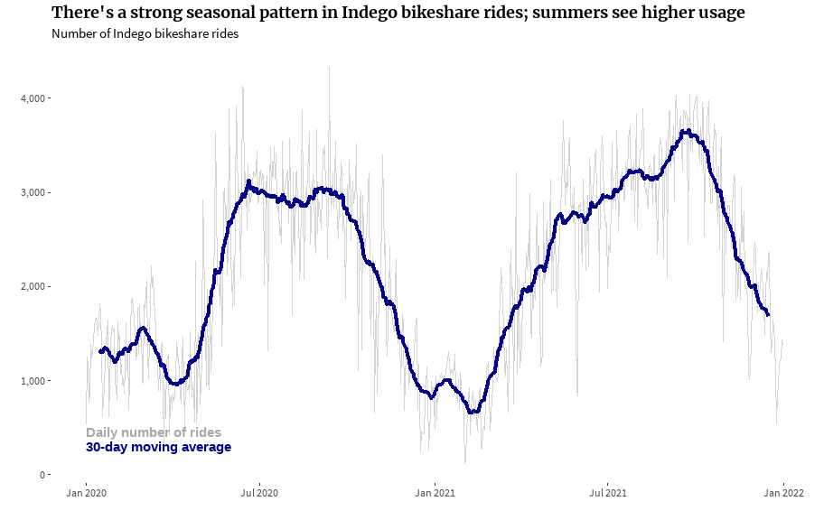
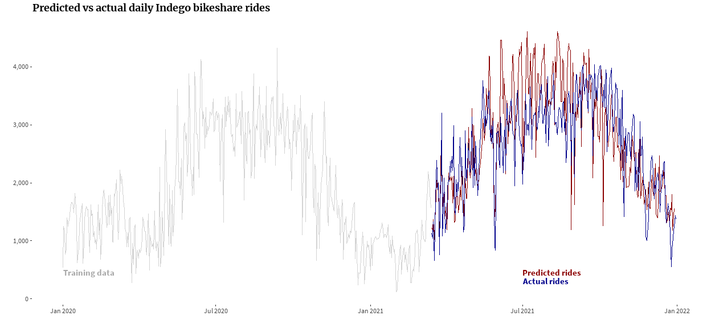

A look into Indego bikeshare usage in Philly
As an Indego bikeshare subscriber, I often ask myself a few questions when deciding between biking, walking, transit, or another way to get around. Is it hot outside? (Maybe I dont want to be sweaty when I arrive at my destination). Would I have to bike or walk uphill? (Im lazy, and again with the sweat). Am I trying to avoid transit or rideshare because covid cases have been trending upwards lately?
Luckily, Indego makes anonymized data available for people like me who want to dig into these questions.
library(tidyverse); library(lubridate); library(rnoaa); library(sf); library(tidycensus); library(rpart.plot)
library(rpart); library(parsnip); library(zoo); library(gt); library(showtext)
font_add_google('Merriweather')
font_add_google('Source Sans Pro', 'ssp')
showtext_auto()
font_theme <- theme(
plot.title = element_text(family = 'Merriweather', face = 'bold'),
plot.subtitle = element_text(family = 'ssp'),
axis.text = element_text(family = 'ssp'),
axis.title = element_text(family = 'ssp'),
legend.text = element_text(family = 'ssp'),
plot.caption = element_text(family = 'ssp', color = 'darkgray')
)
census_api_key(Sys.getenv('census_api'))
tract_elev <- read_csv('../../../philly_analyses/indego/tract_elev.csv', col_types = c(GEOID = 'c'))
holidays <- c(ymd('2020-01-01'), ymd('2020-01-20'), ymd('2020-02-17'),
ymd('2020-05-23'), ymd('2020-05-24'), ymd('2020-05-25'),
ymd('2020-07-03'), ymd('2020-07-04'), ymd('2020-07-05'),
ymd('2020-09-05'), ymd('2020-09-06'), ymd('2020-09-07'),
ymd('2020-10-12'), ymd('2020-11-11'), ymd('2020-11-26'),
ymd('2020-11-27'), ymd('2020-12-25'), ymd('2020-12-26'),
ymd('2020-12-27'), ymd('2021-01-01'), ymd('2021-01-18'),
ymd('2021-02-15'), ymd('2021-05-29'), ymd('2021-05-30'),
ymd('2021-05-31'), ymd('2021-06-18'), ymd('2021-07-03'),
ymd('2021-07-04'), ymd('2021-07-05'), ymd('2021-09-04'),
ymd('2021-09-05'), ymd('2021-09-06'), ymd('2021-10-11'),
ymd('2021-11-11'), ymd('2021-11-25'), ymd('2021-11-26'),
ymd('2021-12-24'), ymd('2021-12-25'), ymd('2021-12-26'))
census_data <- get_acs(geography = 'tract',
geometry = TRUE,
state = 'PA',
county = 'Philadelphia',
year = 2019,
variables = c('B19013_001')) %>%
left_join(tract_elev, by = 'GEOID')
setwd('../../../philly_analyses/indego')
indego <- list.files(pattern = '*.csv')[list.files(pattern = '*.csv') != 'tract_elev.csv'] %>%
map_df(~read_csv(., col_types = cols(start_time = 'c', end_time = 'c', bike_id = 'c'))) %>%
mutate(start_time = as.POSIXct(start_time, format = '%m/%d/%Y %H:%M'),
end_time = as.POSIXct(end_time, format = '%m/%d/%Y %H:%M'),
start_date = as.Date(start_time),
is_electric = bike_type == 'electric',
month_of_year = as.character(month(start_date)),
day_of_week = weekdays(start_date),
is_pandemic = start_date >= ymd('2020-03-15'),
is_weekend = day_of_week %in% c('Saturday', 'Sunday')) %>%
group_by(month = floor_date(start_date, 'month')) %>%
mutate(n_bikes = n_distinct(bike_id),
n_electric = n_distinct(bike_id[bike_type == 'electric']),
p_electric = n_electric/n_bikes,
hour_of_day = as.character(hour(start_time))) %>%
ungroup()
# Keep station stuff separate for a quicker spatial join
stations <- indego %>%
arrange(! is.na(start_lat)) %>%
distinct(start_station, .keep_all = T) %>%
filter(! is.na(start_lat)) %>%
st_as_sf(coords = c('start_lon', 'start_lat'), crs = st_crs(census_data)) %>%
st_join(census_data, join = st_intersects)
indego <- indego %>%
left_join(stations %>%
select(start_station, start_elev = med_elev, med_income_start = estimate),
by = 'start_station') %>%
left_join(stations %>%
select(start_station, end_elev = med_elev, med_income_end = estimate),
by = c('end_station' = 'start_station')) %>%
mutate(elev_change = end_elev - start_elev)
# Pull daily weather data from NOAA at the airport
weather <- ghcnd_search(stationid = 'USW00013739',
date_min = min(as.Date(indego$start_time, na.rm = T)),
date_max = max(as.Date(indego$start_time, na.rm = T)),
var = c('PRCP', 'SNOW', 'SNWD', 'TMAX', 'TMIN', 'AWND'))
weather <- weather$prcp %>%
select(date, prcp) %>%
left_join(weather$tmin %>%
select(date, tmin)) %>%
left_join(weather$tmax %>%
select(date, tmax)) %>%
left_join(weather$snow %>%
select(date, snow)) %>%
left_join(weather$snwd %>%
select(date, snwd)) %>%
left_join(weather$awnd %>%
select(date, awnd)) %>%
# Convert precip from tenths of mm to mm
# Convert temps from tenths of degrees celsius to fahrenheit
mutate(prcp = prcp/10,
snwd = snwd/10,
tmin = (tmin/10)*1.8 + 32,
tmax = (tmax/10)*1.8 + 32)
# calculate 7-day rolling averages of covid hospitalizations
# the idea is that, for each Indego day, we'll use the previous week's rolling avg of covid hospitalizations as an indep variable
# as a proxy of how peaky the pandemic is
covid_hospitalizations <- read_csv('https://phl.carto.com/api/v2/sql?filename=covid_hospitalizations_by_date&format=csv&skipfields=cartodb_id,the_geom,the_geom_webmercator&q=SELECT%20*%20FROM%20covid_hospitalizations_by_date') %>%
filter(hospitalized == 'Yes',
! is.na(date)) %>%
select(date, n = count) %>%
complete(date = seq.Date(min(date), max(date), by = 'day')) %>%
# Fill NA days for n with the surrounding days
mutate(n = na.fill(n, 'extend'),
n_covid_rolling_week = rollmean(n, k = 7, fill = NA, align = 'right')) %>%
select(date, n_covid_rolling_week)
indego <- indego %>%
left_join(weather, by = c('start_date' = 'date')) %>%
left_join(covid_hospitalizations, by = c('start_date' = 'date')) %>%
mutate(n_covid_rolling_week = if_else(start_date < ymd('2020-03-15'), 0, n_covid_rolling_week),
month = as.character(month))
indego_daily <- indego %>%
group_by(start_date, tmin, tmax, prcp, snow, snwd, awnd, n_covid_rolling_week, month, month_of_year, is_weekend, n_bikes, p_electric) %>%
summarise(n_daily_rides = n()) %>%
ungroup() %>%
filter(start_date < ymd('2022-01-01')) %>%
mutate(is_holiday = start_date %in% holidays)
indego_daily %>%
mutate(rides_roll_avg = rollmean(n_daily_rides, k = 30, fill = NA, align = 'center')) %>%
ggplot(aes(x = start_date)) +
geom_line(aes(y = n_daily_rides), col = 'lightgray') +
geom_line(aes(y = rides_roll_avg), col = 'darkblue', size = 1.5) +
annotate('text', x = ymd('2020-01-01'), y = 450, label = 'Daily number of rides',
fontface = 'bold', col = 'darkgray', hjust = 0) +
annotate('text', x = ymd('2020-01-01'), y = 300, label = '30-day moving average',
fontface = 'bold', col = 'darkblue', hjust = 0) +
scale_x_date(date_labels = '%b %Y') +
scale_y_continuous(labels = scales::comma) +
labs(x = '', y = '',
title = "There's a strong seasonal pattern in Indego bikeshare rides; summers see higher usage",
subtitle = 'Number of Indego bikeshare rides') +
theme(plot.title = element_text(face = 'bold'),
panel.background = element_blank(),
panel.grid = element_blank()) +
font_theme

Before I got into things at a single-ride level, I wanted to see if I could model the number of Indego rides that users take each day. Theres a strong seasonal pattern in bikeshare rides, with summers seeing higher usage than winters.
I used a type of generalized linear model (GLM) called a quasi-Poisson GLM. Poisson models are good for discrete count data, where counts (or, numbers of bike rides) will never be less than 0. The quasi model is a type of Poisson model that accounts for overdispersion in the data, when the data vary more than would be expected.
As model inputs, I used a few weather variables: maximum daily temperature, amount of precipitation, and snowfall depth (potentially from snow that fell on previous days). I decided to use maximum temperature (which would reflect daytime temperatures, generally) rather than minimum temperature (which would reflect nighttime temperatures, generally) because of higher bikeshare usage during the day. Also, min and max temperatures are pretty collinear: generally, a day with a higher max temperature will also have a higher min temperature.
I also included a rolling average of covid hospitalizations over the past seven days. My thinking here was that people might be more likely to use bikeshare to get around instead of transit or rideshare. Last, I included an indicator of whether the day was a weekend and whether it was a holiday.
indego_daily_sample <- indego_daily %>%
# Get a year of pandemic in the training data
filter(start_date <= ymd('2021-03-14'))
indego_model <- glm(n_daily_rides ~ tmax + prcp + snwd + n_covid_rolling_week + p_electric + is_weekend + is_holiday,
data = indego_daily_sample, family = quasipoisson)
summary(indego_model)
regression_table <- summary(indego_model)$coefficients %>% as_tibble() %>%
mutate(Variable = c('Intercept', 'Daily max temperature (F)', 'Daily precip (mm)',
'Accumulated snow depth (mm)', 'Covid hospitalizations prior 7 days',
'% electric bikes in fleet', 'Weekend', 'Holiday'), .before = Estimate,
`Pr(>|t|)` = ifelse(`Pr(>|t|)` < 0.001, '< 0.001', as.character(round(`Pr(>|t|)`, 3))),
Estimate = round(Estimate, 4),
`Std. Error` = round(`Std. Error`, 4),
`t value` = round(`t value`, 2)) %>%
rename(`Standard Error` = `Std. Error`,
`p value` = `Pr(>|t|)`)
add_stat_color <- function(tval){
add_color <- if (tval > 30) {
"background: hsl(230, 100%, 70%); color: hsl(249, 33%, 19%);"
} else if (tval <= 30 & tval > 10) {
"background: hsl(230, 70%, 80%); color: hsl(230, 45%, 30%);"
} else if (tval <= 10 & tval > 0) {
"background: hsl(230, 70%, 90%); color: hsl(230, 45%, 30%);"
} else if (tval <= -5) {
"background: hsl(350, 70%, 70%); color: hsl(350, 45%, 30%);"
} else if (tval <= 0 & tval > -5) {
"background: hsl(350, 70%, 90%); color: hsl(350, 45%, 30%);"
}
div_out <- htmltools::div(
style = paste(
"display: inline-block; padding: 2px 12px; border-radius: 15px; font-weight: 600; font-size: 12px;",
add_color
),
tval
)
as.character(div_out) %>%
gt::html()
}
regression_table %>%
mutate(`t value` = purrr::map(`t value`, add_stat_color)) %>%
gt() %>%
cols_align(align = 'right',
columns = 5) %>%
opt_table_lines(extent = 'default') %>%
tab_options(
table.border.top.color = 'white',
table_body.border.bottom.color = 'black',
heading.border.bottom.color = 'black',
column_labels.border.bottom.color = 'black',
table_body.hlines.color = "white"
) %>%
tab_style(
style = list(
cell_text(weight = 'bold')
),
locations = cells_column_labels(everything())
) %>%
tab_style(
style = list(
cell_text(weight = 'bold')
),
locations = cells_body(
columns = `p value`,
rows = as.numeric(`p value`) < 0.05 | `p value` == '< 0.001'
)) %>%
tab_header(
title = md("**Regression output: Modeling bikeshare daily volumes**")
) %>%
opt_table_font(font = 'ssp') %>%
tab_style(
style = list(
cell_text(
align = "left",
font = 'Merriweather'
)
),
locations = list(
cells_title(groups = "title")
)
)
| Regression output: Modeling bikeshare daily volumes | ||||
|---|---|---|---|---|
| Variable | Estimate | Standard Error | t value | p value |
| Intercept | 6.0389 | 0.0809 | 74.67 |
< 0.001 |
| Daily max temperature (F) | 0.0209 | 0.0008 | 25.13 |
< 0.001 |
| Daily precip (mm) | -0.0132 | 0.0016 | -8.36 |
< 0.001 |
| Accumulated snow depth (mm) | -0.0985 | 0.0152 | -6.48 |
< 0.001 |
| Covid hospitalizations prior 7 days | -0.0040 | 0.0005 | -8.46 |
< 0.001 |
| % electric bikes in fleet | 1.4796 | 0.6028 | 2.45 |
0.015 |
| Weekend | 0.0837 | 0.0251 | 3.34 |
< 0.001 |
| Holiday | -0.0801 | 0.0532 | -1.51 |
0.133 |
Each of the independent variables was statistically significant except the holiday variable. The relationship between most variables and the number of daily bikeshare rides was in the direction (positive or negative) that I would have expected except the covid variable. While I had originally thought that higher hospitalization rates would make people more likely to use Indego (as its probably safer than transit), the relationship was actually the opposite. I neglected to consider that a lot of people were probably staying home more and if they were leaving, they might be more likely to drive than to take an Indego bike.
I used about a year of 2020 (plus a couple months of 2021 so that Id have a year of pandemic data) data to make the model with hopes that I could roughly predict rideshare counts in 2021. The graph below shows that training data in gray, the model-predicted values in red, and the actual rideshare counts in blue.
indego_daily_leftovers <- indego_daily %>%
filter(start_date >= ymd('2021-03-15')) %>%
mutate(predicted_n = predict(indego_model, ., type = 'response'))
indego_daily_sample %>%
select(start_date, n_training = n_daily_rides) %>%
bind_rows(
indego_daily_leftovers %>%
select(start_date, actual_n = n_daily_rides, predicted_n)
) %>%
ggplot(aes(x = start_date)) +
geom_line(aes(y = n_training), col = 'lightgray') +
geom_line(aes(y = predicted_n), col = 'darkred') +
geom_line(aes(y = actual_n), col = 'darkblue') +
annotate('text', x = ymd('2020-01-01'), y = 450, label = 'Training data',
fontface = 'bold', col = 'darkgray', hjust = 0, family = 'ssp') +
annotate('text', x = ymd('2021-07-01'), y = 450, label = 'Predicted rides',
fontface = 'bold', col = 'darkred', hjust = 0, family = 'ssp') +
annotate('text', x = ymd('2021-07-01'), y = 300, label = 'Actual rides',
fontface = 'bold', col = 'darkblue', hjust = 0, family = 'ssp') +
scale_x_date(date_labels = '%b %Y') +
scale_y_continuous(labels = scales::comma) +
labs(x = '', y = '',
title = "Predicted vs actual daily Indego bikeshare rides") +
theme(panel.background = element_blank(),
panel.grid = element_blank()) +
font_theme

I thought Id dig even further and see if I could predict whether someone would use an electric-assist bike vs a traditional bike. Indego has really ramped up their electric-assist fleet recently, so I only used data from September 2021 so that the model wasnt just picking up on fleet changes.
I decided to use a classification tree almost solely because I think decision trees are easy to visualize in a way that makes sense to a lot of people and might mirror human decisionmaking.
As model inputs, I used elevation change between the ride start and ride end (thinking that an uphill ride would be more likely to be electric), trip duration (thinking longer rides might be less likely to be electric because electric charges are by the minute), whether the trip started or ended in a neighborhood where incomes are higher (thinking that higher incomes might mean someone is more likely to spend money on electric assist), some weather variables, and passholder type.
set.seed(164)
indego_sample <- indego %>%
filter(between(start_date, ymd('2021-09-01'), ymd('2021-09-30'))) %>%
# Get 1500 electric and 1500 non-electric
group_by(is_electric) %>%
slice_sample(n = 1500) %>%
ungroup() %>%
mutate(is_electric = case_when(
is_electric ~ 'Electric',
TRUE ~ 'Non-electric'
)) %>%
mutate(is_electric = factor(is_electric),
day_of_week = weekdays(start_date),
is_weekday_rush = (! day_of_week %in% c('Saturday', 'Sunday')) &
hour_of_day %in% c('7', '8', '9', '16', '17', '18'),
is_weekend_night = ( day_of_week %in% c('Friday', 'Saturday')) &
hour_of_day %in% c('20', '21', '22', '23', '0', '1', '2'),
is_weekday_rush = as.factor(is_weekday_rush),
is_weekend_night = as.factor(is_weekend_night),
med_income_start = cut_number(med_income_start, 4, labels = F),
med_income_end = cut_number(med_income_end, 4, labels = F),
high_income = as.factor(med_income_start == 4 | med_income_end == 4),
passholder_type = case_when(
passholder_type == 'Indego30' ~ ' Month',
passholder_type == 'Indego365' ~ ' Annual',
TRUE ~ passholder_type
)) %>%
rename(`Elevation change (ft)` = elev_change,
`Passholder type` = passholder_type,
`Trip duration (min)` = duration)
model <- decision_tree(mode = 'classification') %>%
fit(is_electric ~ `Trip duration (min)` + `Passholder type` + p_electric + prcp +
awnd + tmax + high_income + is_weekday_rush + is_weekend_night + `Elevation change (ft)`, data = indego_sample)
model$fit %>%
rpart.plot(type = 5, extra = 8, roundint = F, cex = 0.8,
fallen.leaves = T, main = 'Predicting electric vs non-electric bike usage')
Ill note that this isnt a good model at all, but there are some interesting tidbits. Notably, large elevation change and someone using an Indego day pass (as opposed to longer-term subscription) are associated with electric bike usage. Also, longer-duration rides for subscribers are associated with non-electric bike usage rather than renting electric-assist bikes.
Again, this model doesnt do a good job at predicting whether a ride will be electric-assist or not, but I think its an intuitive way to visualize decisionmaking and seeing the partitions between different decision points.